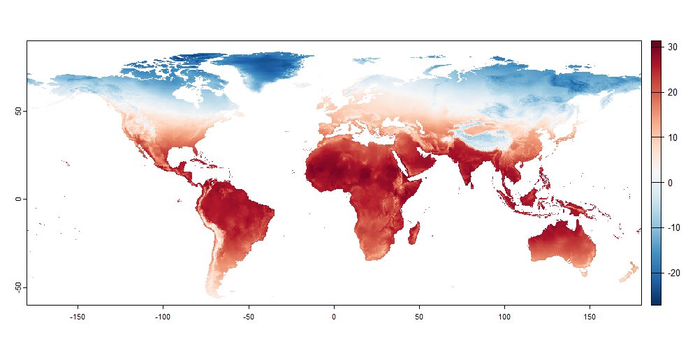
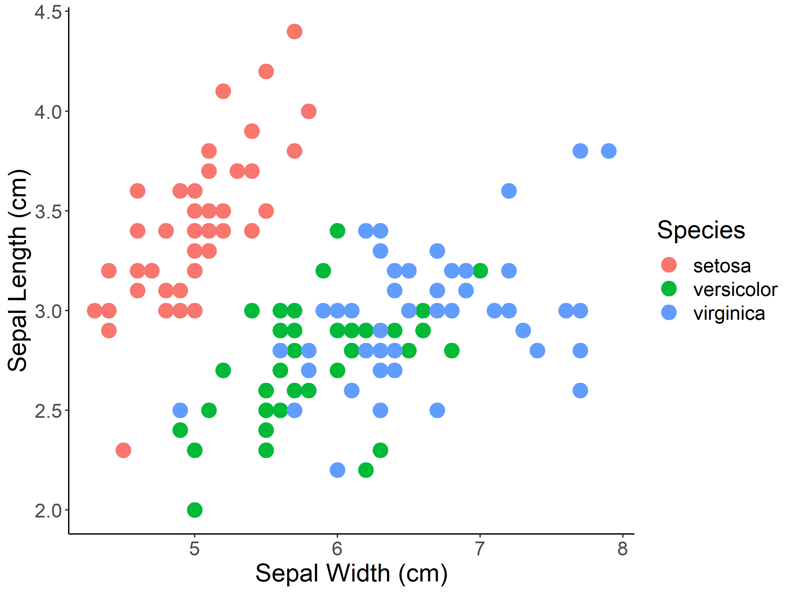

Matic Jančič: Teaching portfolio
About
Publications
Categories
All
(18)
Introduction to GIS in R
(3)
Introduction to R
(5)
Introduction to marine ecological data in R
(4)
Introduction to species distribution models in R
(5)
Uvod v R kot GIS
(4)
PRELIMINARY ASSESSMENT OF LOGGERHEAD SEA TURTLE OVERLAP WITH INDUSTRIAL FISHERIES IN THE ADRIATIC SEA
14th European Vertebrate Management Conference
Matic Jančič; Department of biodiversity, University of Primorska
Apr 25, 2025
PROJECTING SPECIES DISTRIBUTION ACCORDING TO FUTURE SCENARIOS
Introduction to species distribution models in R
Introduction to species distribution models, Lab 5
Matic Jančič & assist. prof. Peter Glasnović; Department of biodiversity, University of Primorska
Nov 6, 2023
MODEL EVALUATION AND REPRESENTATION
Introduction to species distribution models in R
Introduction to species distribution models, Lab 4
Matic Jančič & assist. prof. Peter Glasnović; Department of biodiversity, University of Primorska
Oct 31, 2023
MODELING ALGORITHMS AND MODEL FITTING
Introduction to species distribution models in R
Introduction to species distribution models, Lab 3
Matic Jančič & assist. prof. Peter Glasnović; Department of biodiversity, University of Primorska
Oct 24, 2023

OBTAINING, ASSESSING AND EXTRACTING ENVIRONMENTAL DATA
Introduction to species distribution models in R
Introduction to species distribution models, Lab 2
Matic Jančič & assist. prof. Peter Glasnović; Department of biodiversity, University of Primorska
Oct 17, 2023
OBTAINING OCCURRENCES AND CREATING PSEUDO-ABSENCES OF SPECIES
Introduction to species distribution models in R
Introduction to species distribution models, Lab 1
Matic Jančič & assist. prof. Peter Glasnović; Department of biodiversity, University of Primorska
Oct 10, 2023
SUMMARY STATISTICS IN R
Introduction to R
Advanced Topics in Conservation Biology, Lab 5
Matic Jančič; Department of biodiversity, University of Primorska
Sep 20, 2023

GRAPHICAL DATA EXPLORATION IN R
Introduction to R
Advanced Topics in Conservation Biology, Lab 4
Matic Jančič; Department of biodiversity, University of Primorska
Sep 18, 2023
SELECTING, FILTERING AND CREATING NEW VARIABLES IN R
Introduction to R
Advanced Topics in Conservation Biology, Lab 3
Matic Jančič; Department of biodiversity, University of Primorska
Sep 15, 2023
WORKING DIRECTORIES AND DATA IMPORT IN R
Introduction to R
Advanced Topics in Conservation Biology, Lab 2
Matic Jančič; Department of biodiversity, University of Primorska
Sep 4, 2023
RASTRSKI PODATKI Z VISOKO LOČLJIVOSTJO V R-U
Uvod v R kot GIS
Geografski informacijski sistemi in vede, Vaja 4
Matic Jančič; Department of biodiversity, University of Primorska
Mar 25, 2023
MARINE SPECIES AND GEOSPATIAL DATA EXPLORATION AND VISUALIZATION
Introduction to marine ecological data in R
Workshop Day 4 at Faculty of Natural Sciences, Juraj Dobrila University of Pula
Matic Jančič; Department of biodiversity, University of Primorska
Mar 24, 2023
ACCESSING MARINE GEOSPATIAL DATA IN R WITH SDMPREDICTORS
Introduction to marine ecological data in R
Introduction to GIS in R
Workshop Day 3 at Faculty of Natural Sciences, Juraj Dobrila University of Pula
Matic Jančič; Department of biodiversity, University of Primorska
Mar 23, 2023
GLOBALNI OKOLJSKI PODATKI V R-U
Uvod v R kot GIS
Geografski informacijski sistemi in vede, Vaja 3
Matic Jančič; Department of biodiversity, University of Primorska
Mar 23, 2023
ACCESSING MARINE SPECIES OCCURENCES IN R WITH RGBIF
Introduction to marine ecological data in R
Introduction to GIS in R
Workshop Day 2 at Faculty of Natural Sciences, Juraj Dobrila University of Pula
Matic Jančič (& Peter Glasnović); Department of biodiversity, University of Primorska
Mar 22, 2023
DOSTOP DO PODATKOV IZ PORTALA GBIF IN PRIKAZ Z UPORABO ORODIJ LEAFLET
Uvod v R kot GIS
Geografski informacijski sistemi in vede, Vaja 2
Matic Jančič (& Peter Glasnović); Department of biodiversity, University of Primorska
Mar 22, 2023
UVOD V UPORABO PROGRAMSKEGA JEZIKA R KOT GIS
Uvod v R kot GIS
Geografski informacijski sistemi in vede, Vaja 1
Matic Jančič; Department of biodiversity, University of Primorska
Mar 21, 2023
INTRODUCTION TO R & R STUDIO
Introduction to marine ecological data in R
Introduction to R
Introduction to GIS in R
Workshop Day 1 at Faculty of Natural Sciences, Juraj Dobrila University of Pula
Matic Jančič; Department of biodiversity, University of Primorska
Mar 21, 2023
No matching items